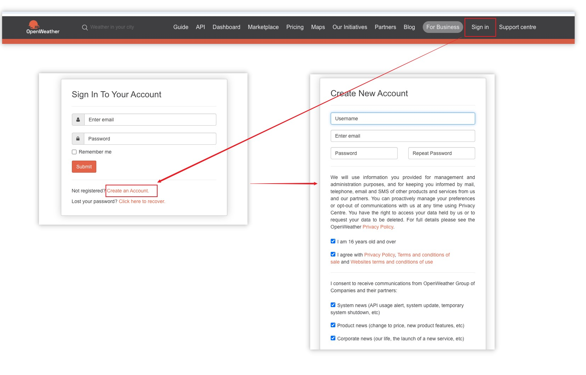

Configuraci√≥n del clima¶
Esta sección explica cómo configurar el clima en la app ConnectIQ para mostrar datos correctos en el módulo de viento.
Compatibilidad de dispositivos¶
El módulo de viento puede tener tres estados: actualizado por internet, usando datos internos de Garmin o sin datos. Debido a diferencias de soporte de API entre dispositivos antiguos y nuevos (limitación de Garmin), no todos los modos funcionan en todos los modelos. En dispositivos antiguos, aunque agregues la clave API de OpenWeather, los datos no se mostrarán correctamente. Ver tabla:
| Icono | Significado | Frecuencia de actualización | Precisión de ubicación | Dispositivos compatibles |
|---|---|---|---|---|
| üü¢ | Actualizado correctamente con OpenWeather | Cada minuto | Info del clima en la ubicaci√≥n actual (lat/lon) | 540 / 840 / 1040 / 1050 / explore2 |
| ⭕ | Fallo en OpenWeather, usa datos internos de Garmin | Variable, depende de Garmin | Clima desde estación meteorológica cercana | 530 / 830 / 1030 y modelos más nuevos |
| üî¥ | No se pudieron obtener datos | - | - | 520 Plus / 820 / explore y modelos posteriores |
Requisitos previos para üü¢¶
Para recibir actualizaciones de OpenWeather, se deben cumplir las siguientes condiciones: 1. Clave API: Debe configurarse una clave API válida de OpenWeather en la configuración de MyGahoo 2. Datos de ubicación: El dispositivo debe poder obtener coordenadas GPS exitosamente 3. Conexión de red: El dispositivo debe tener una conexión a internet activa (a través del smartphone emparejado o WiFi)
Ejemplos de iconos de estado:

Registro y obtenci√≥n de API de OpenWeather¶
- Visita el sitio oficial: OpenWeather Map
- Registra una cuenta personal (no empresarial) e inicia sesión

- Ve a la sección “My API Keys” y haz clic en “Generate” para crear tu clave
- Copia la clave y pégala en el campo correspondiente en la configuración de MyGahoo (en la app ConnectIQ)

- Haz clic en “Save” para guardar la configuración